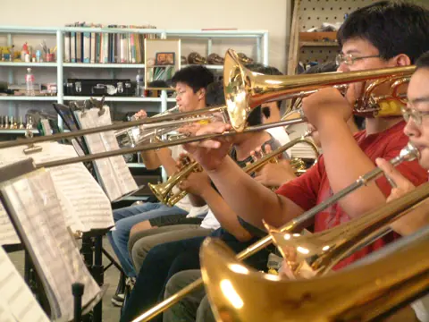
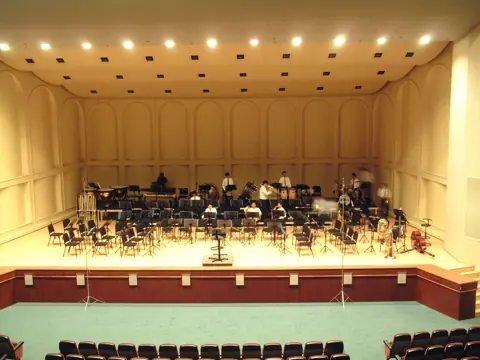
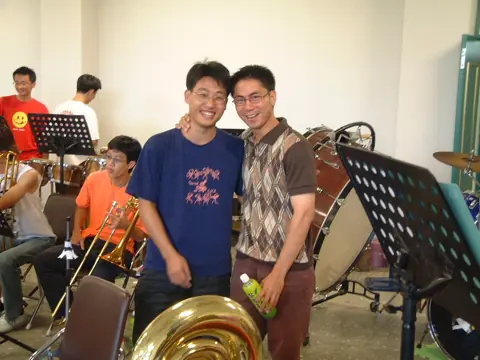
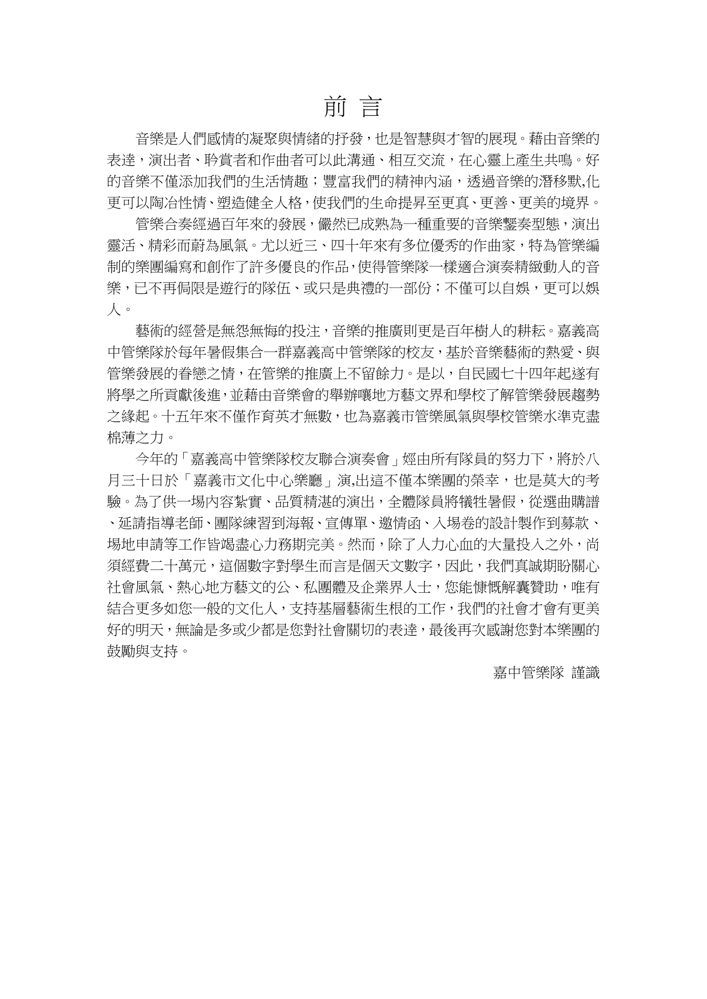
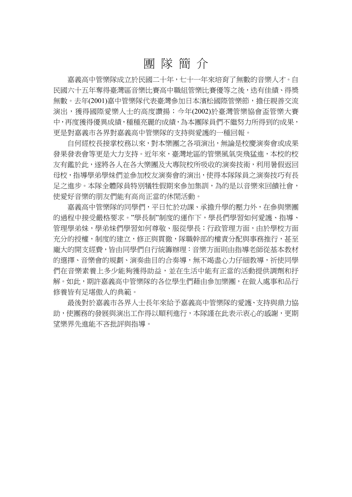

演出資訊
| 屆別 | 第 18 屆 |
|---|---|
| 年度 | 2002（民國 91 年） |
| 主題 | 第 18 屆聯合音樂會 |
| 日期 | 2002.08.30 |
| 時間 | 19:30 |
| 場地 | 嘉義市立文化中心音樂廳 今嘉義市政府文化局音樂廳 |
| 指揮 | 資料待考 |
| 獨奏／協奏 | 資料待考 |
| 籌辦字頭 | 待考 |
| 票務 | 票務資訊待考 |
| 資料狀態 | 部分可考 |
待補欄位：指揮、完整團員名單。
關於這場音樂會
第 18 屆聯合音樂會依 2002 年活動企劃書記載，於 8 月 30 日 19:30 在嘉義市立文化中心音樂廳演出，該場地即今日嘉義市政府文化局音樂廳。
本次補入的企劃書影像保留了當年「前言」與「團隊簡介」原貌；活動企劃中的演出日期、時間、場地、相關單位與暑期集訓分部負責人，則整理為本頁演出資訊與幕後行政團隊資料。
目前仍待補齊本屆指揮、正式主題名稱、完整曲目與團員名單；既有照片與企劃書資料先共同保存第 18 屆的可考輪廓。
指揮與獨奏
本屆指揮與獨奏／協奏音樂家資料仍待考證；若您保存節目冊或演出紀錄，歡迎聯絡補充。
曲目
- Blue Midnight照片檔名留下之曲目線索
若尚未顯示上下半場或完整曲序，表示目前資料尚不足以確認正式節目順序；後續會依節目冊與校友補充資料校對。
演出人員名單
完整演出人員名單待節目冊、團員名冊或校友補充資料確認。
幕後行政團隊
| 職務 | 人員 | 職掌 |
|---|---|---|
| 指導單位 | 嘉義市政府 | 活動企劃書之音樂演奏會相關單位 |
| 主辦單位 | 國立嘉義高級中學、嘉義市文化局 | 活動企劃書之音樂演奏會相關單位 |
| 協辦單位 | 國立嘉義高級中學校友會、國立嘉義高級中學家長會、嘉義市管樂團、嘉義市愛樂學會 | 活動企劃書之音樂演奏會相關單位 |
| 演出單位 | 國立嘉義高中管樂隊 | 活動企劃書之音樂演奏會相關單位 |
| 長笛分部 | 7111 盧宓承 | 暑期集訓分部負責 |
| 豎笛分部 | 7222 李吉峰 | 暑期集訓分部負責 |
| 薩克斯風分部 | 8232 陳寬來 | 暑期集訓分部負責 |
| 小號分部 | 8101 陳明陽 | 暑期集訓分部負責 |
| 法國號分部 | 7503 蔡文立 | 暑期集訓分部負責 |
| 長號分部 | 7901 高健雄 | 暑期集訓分部負責 |
| 上低音號分部 | 6801 游宗仁 | 暑期集訓分部負責 |
| 低音號分部 | 7581 翁啟榮 | 暑期集訓分部負責 |
| 打擊分部 | 7502 陳志鳴 | 暑期集訓分部負責 |
| 合奏指導 | 顏崇勝 | 暑期集訓合奏練習指導 |
本表依 2002 年第 18 屆活動企劃書「活動企劃」整理，只摘錄音樂演奏會相關單位與暑期集訓分部負責人；企劃書原文長笛部負責人作「盧宓成」，此處依網站既有校友名錄校正為盧宓承。
贊助與致謝
贊助、協辦與致謝名單仍待節目冊或海報補齊。
演出留影



節目冊
節目冊與企劃書影像以縮圖列保存；可左右滑動瀏覽，點開圖片後可用左右鍵切換頁面。


影片連結
目前尚無可公開整理的錄影連結。
相關文章
目前尚無已整理的相關文章。
資料補充
本頁日期、時間、場地、演出相關單位、集訓分部負責人與節目冊影像，整理自 2002 年第 18 屆活動企劃書；照片整理自校友提供之 2002 年演出相簿。曲目、指揮、完整團員名單仍待正式節目冊或校友資料補齊。
目前仍待補：指揮、完整團員名單。